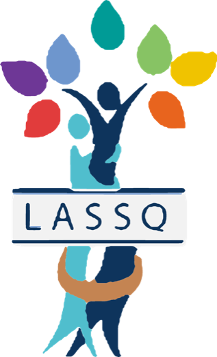

Caso de éxito · Ortopedia LassQ
Estrategia digital liderada por Víctor Quesada desde marzo de 2025
Empezamos de cero y aprendimos en el camino. Desde marzo de 2025 contamos historias reales de pacientes y médicos en vez de hacer anuncios, y con decisiones como sumar aliados la comunidad se multiplicó.
89.199
seguidores en todas sus redes en octubre de 2026.
+20 M
de vistas entre TikTok, Facebook e Instagram.
206 mil
me gusta en TikTok.